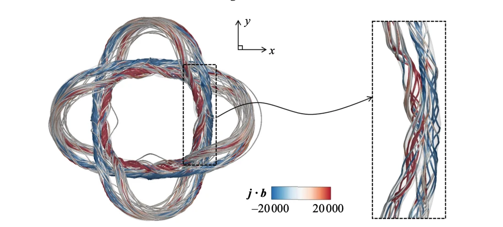

Magnetic tubes and vortex tubes influence one another in magnetohydrodynamic flows. This study asks how their geometry and relative orientation affect magnetic splitting.
在磁流体力学中，磁通管与涡管相互影响。本研究考察它们的几何形状和相对方向如何改变磁通管分裂。
A geometric description helps connect what is visible in the evolving tubes to the forces that produce the motion. The simulations then test how an accompanying vortex changes that mechanism.
几何描述将管状结构的可见演化与产生运动的作用力联系起来，数值模拟则进一步检验伴随涡旋如何改变这一机制。
Describing tube dynamics through geometry用几何描述管状结构动力学
A Frenet–Serret frame along magnetic field lines provides a geometric description of forces and tube dynamics. Direct numerical simulations examine linked magnetic and vortex structures, varying their initial angle from zero to 45 degrees.
沿磁力线建立 Frenet–Serret 标架，对作用力和管状结构的动力学进行几何描述。直接数值模拟考察相互链接的磁结构与涡结构，并将初始夹角从 0 度变化到 45 度。
The Frenet–Serret frame attaches tangent, normal and binormal directions to each magnetic field line. Curvature and torsion then provide a local language for describing forces that bend or separate a tube. In this description, the Lorentz-force-induced vortex dipole is not just another flow visualization: it is part of the mechanism that drives splitting. An accompanying vortex can change that mechanism by altering the local rotational flow.
Frenet–Serret 标架在每条磁力线上定义切向、法向与副法向，曲率和挠率则提供描述弯曲与分离作用的局部语言。在这一描述中，洛伦兹力诱发的涡偶极并非仅是另一种流场可视化，而是分裂机制的一部分；伴随涡旋通过改变局部旋转流动来干预这一机制。
{kind=link}

Varying the magnetic–vortical configuration改变磁结构与涡结构的配置
The study combines an analytical force decomposition with direct numerical simulations of linked magnetic and vortex tubes. Initial relative angles from zero to 45 degrees probe how geometry changes the interaction. Field-line geometry, vorticity generation and magnetic-to-kinetic energy transfer are considered together. Comparing an isolated magnetic structure with one accompanied by a vortex separates self-induced splitting from the influence of an imposed flow structure.
研究将解析力分解与相互链接的磁管、涡管直接数值模拟结合，改变 0–45 度初始夹角，考察几何如何改变相互作用。同时分析磁力线几何、涡量生成和磁能—动能转换，并通过有无伴随涡管的比较区分自发分裂与外加流动结构的作用。
When a vortex suppresses magnetic splitting涡旋何时抑制磁通管分裂
Curved magnetic tubes generate Lorentz forces and dipole vortices that can split the tubes into smaller structures. A sufficiently strong accompanying vortex tube can disrupt dipole formation and inhibit splitting. The simulations also show sensitivity to small changes in angular configuration. These findings connect local geometry with the evolution of larger structures and magnetic energy, within the configurations studied.
弯曲的磁通管产生洛伦兹力，继而形成可促使其分裂的偶极涡。强度足够的伴随涡管能够破坏偶极涡的形成，从而抑制分裂。模拟还发现，相对角度的微小变化也会影响演化。这些结论在所研究构型中连接了局部几何、大尺度结构与磁能演变。
From local forces to structural evolution从局部作用力到结构演变
The result connects a local geometric description to a visible change in topology and energy release. It also cautions against treating a magnetic tube independently of the surrounding vortical flow. The configurations are idealized numerical systems, so the mechanism offers a basis for interpreting more complex MHD flows rather than a direct prediction for every astrophysical configuration.
结果把局部几何描述与可见的拓扑变化、能量释放联系起来，也说明不能把磁管与周围涡旋流动割裂看待。这些配置属于理想化数值系统，因此机制可用于理解更复杂的磁流体过程，但并非对所有天体物理配置的直接预测。
Paper & authors论文与作者
Effects of magnetic–vortical interactions on magnetic splitting ↗
Cite this work
@article{Kang_2025,
title = {Effects of magnetic–vortical interactions on magnetic splitting},
volume = {1009},
ISSN = {1469-7645},
url = {http://dx.doi.org/10.1017/jfm.2025.263},
DOI = {10.1017/jfm.2025.263},
journal = {Journal of Fluid Mechanics},
publisher = {Cambridge University Press (CUP)},
author = {Kang, Linlin
and Wang, Yanru
and Jiang, Zhongzheng
and Hao, Jinhua
and Xiong, Shiying
and Fan, Dixia
and Cui, Weicheng},
year = {2025},
month = Apr
}